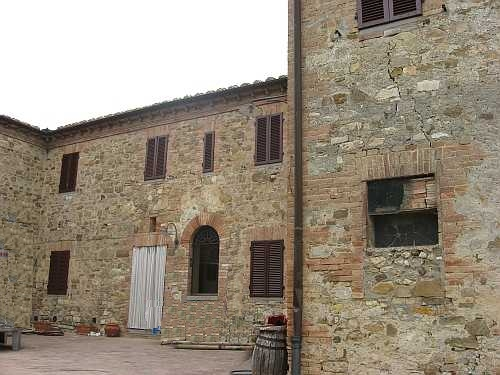
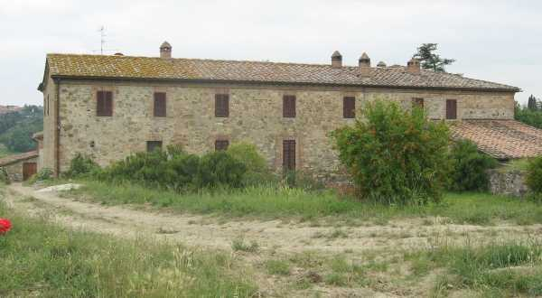
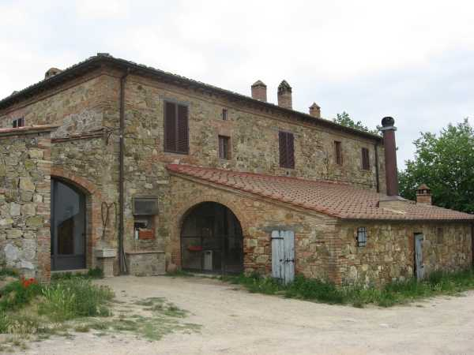

Il nome generico di Casanuova non ci aiuta certamente a conoscere l’epoca della nascita di questo podere, situato attualmente nel Comune di Monteriggioni, ma una volta, fino a metà Ottocento, faceva parte della comunità di Castelnuovo insieme al Molino di Quercegrossa con il quale è unita da sempre nella stessa proprietà ma non alla stessa parrocchia essendo la Casanuova parrocchia di Lornano prima di essere unita a Quercegrossa.

Vedute della Casanuova: il complesso poderale; l'ingresso nella parte sud; il podere da nord; l'aggiunta a ovest del Novecento"
Nata lontano dai piani della Staggia, in posizione di sicurezza dai frequenti allagamenti, ne dominava la pianura e doveva essere complementare al Molino.
Vicina alla via principale della Castellina, si accede da essa da una strada, a poche centinaia di metri dal ponte sul fiume, di difficile ingresso contromano per chi viene da Quercegrossa.
Alla famiglia Saracini di Siena si deve senz’altro far risalire l’edificazione della Casanuova, o la trasformazione da una preesistente capanna agricola, forse ai primi del Cinquecento, ma non è da escludere che ciò sia avvenuto nel secolo precedente, comunque la proprietà Saracini è documentata nel 1570. Due anni dopo, nel 1572, un Cristofano Verdelli sembra l’affittuario dei due poderi.
La famiglia De Vecchi, padrona di numerosi mulini e poderi nella provincia senese, imparentata con i Saracini, appare nel 1592 e nella persona di Carlo possiede il Molino e la Casanuova. I De Vecchi, antica e nobile casata senese, vivevano in S. Martino e la fattoria di Montarioso si configurava come centro delle loro proprietà a Nord di Siena, così come sarà per i successivi proprietari, fino ai Festa di recente memoria, costringendo i due contadini di Quercegrossa a trasportare la loro produzione di parte padronale e l’uva da vendemmiare a Montarioso. Il 21 giugno del 1911 moriva Caterina De Vecchi, l’ultima discendente di questa antica famiglia; erano trascorsi oltre tre secoli da quando il rammentato Carlo aveva acquistato la Casanova. Da alcuni decenni Caterina divideva la proprietà con la sorella Giulia e col marito Eugenio Gondi, in pratica il vero amministratore tantoché il podere è definito
"Casanova Gondi". Il 19 maggio 1876 era entrato nel possesso anche il marito della sorella Giulia che merita di essere ricordato per i suoi titoli di cavaliere del Sovrano Ordine di Malta: S. E. il Bali Commendator Antoniri Arrigo duca di Brindisi. Ma entro quello stesso anno Giulia cedeva i suoi diritti a Caterina e usciva di scena. Alla ricordata morte di Caterina De Vecchi, il figlio Guido ne eredita i beni con il padre Eugenio usufruttuario, ma dopo un decennio vende tutto al Comm. Dr. Emilio Ginanneschi con atto registrato il 26 marzo 1924. I Ginanneschi, domiciliati a Castel del Piano, sono da almeno un secolo una ricca famiglia di rilievo nel notariato senese. Morto Emilio nel 1926, con atto del 25 giugno 1927 tutti i notevoli beni Ginanneschi passano ai sei eredi, fatto salvo l’usufrutto della vedova Elena Porciatti fu Porzio. La suddivisione tra i fratelli porterà alla dispersione della proprietà che col trascorrere dei decenni sarà alienata quasi totalmente. Comunque, i poderi di Quercegrossa sono assegnati come quota della loro eredità alle quattro sorelle, tutte maritate: Ginanneschi Giulia nei Mancini, Angela nei Festa, Annunziata nei Carlesi e Clotilde nei Chiarori. Infine, l’atto conclusivo del 30 giugno 1934 che vedeva l’acquisizione dell’intera proprietà della Casanova, del Molino nonché di Montarioso da parte di Angela, con il marito Gaetano Festa a farla da temuto padrone. Oggi, la Casanova è l’unica proprietà rimasta alla famiglia.

La Casanova appare già nel 1825 come una grande costruzione massiccia su pianta quadrata con aia e capanna. Il tutto è dato di 2240 bq. corrispondenti a 760 mq. Fin dal lontano Cinquecento vi è un solo contadino con una famiglia di medie dimensioni al quale si affianca a metà Ottocento e per un decennio un pigionale. La vera trasformazione in due poderi si ha nel 1881 con le due famiglie Masti, separate. In quell’anno vivono alla Casanuova ben diciannove persone e certamente sono occorsi lavori di sistemazione e l’aggiunta di stalle e dell’aia. A memoria d’uomo si ricorda l’altro intervento di ingrandimento portato alla stalla e alle stanze superiori per adattarle alla numerosa famiglia entrante dei Fabiani. Le fertili terre che circondavano il podere si estendevano per ben ventinove ettari di cui sette boschivi che prima della seconda guerra avevano i loro terrazzamenti. Erano equamente suddivisi, con una modesta differenza, tra i due contadini anche se negli ultimi anni Sessanta si ebbero distribuzioni diverse tra i contadini rimasti e parte delle terre passarono al Molino. Si ricorda che i Pistolesi, alloggiati nella parte a Est, avevano circa dodici ettari ai quali se ne aggiunsero alcuni delle terre dei Fabiani mentre altri vennero affittati. Nella stalla i Pistolesi tenevano costantemente una decina di bestie con due paia di vacche e vitelli per la vendita. Nel castro, due scrofe e ammazzavano un maiale all’anno, e uno il padrone. La tribbiatura alla Casanova avveniva in due fasi: piazzavano dietro la casa nell’aia dei Testi e tribbiavano; ripartivano e andavano all’aia del Fabiani alla distante capanna.

Tra i tanti nomi che si leggono scorrendo i registri anagrafici si comincia con Bastiano colono nel 1570 e un Piero Bianciardi nel 1572. Nel 1594 è ricordato un Giuliano detto
“il signorino" e nel 1595 vi muore Michele di Giovanni Maria Fontani. Nel 1597 un Partini, e un Tozzi è contadino dei De Vecchi nel 1615, mentre la famiglia Bari vi abita nel 1663. Poi i Semplici, i Lusini e a fine Seicento i Palazzi, parenti di quelli dell’Olmicino del nostro secolo. A seguire, tutto il Settecento è caratterizzato da un grande movimento di famiglie, e sono poche quelle che vi restano per più di un decennio e comunque per la scarsità dei documenti è difficile stabilirne la permanenza. Poi, nell’Ottocento, arriva la famiglia Masti che vi permane per un secolo alla quale seguono i Gambassi, i Testi, i Panti, i Fabiani e i Pistolesi.
Oggi i campi della Casanuova continuano ad essere parzialmente coltivati in proprio, dall’erede dei Ginanneschi, Gaetano Festa.
Capitolo successivo "Casapera"
Inizio pagina
Vai all'Indice dei Capitoli